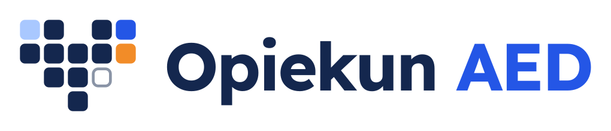
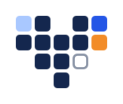
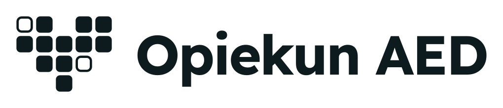
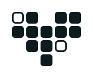

Akcja zachęcająca dostawców do udostępniania danych o defibrylatorach AED w portalu dane.gov.pl.
01 · Koncepcja
Opiekun AED zachęca firmy sprzedające defibrylatory, zarządców obiektów i samorządy do pokazania swoich urządzeń w jednym otwartym zbiorze na dane.gov.pl. Znak to serce złożone z 13 komórek tabeli danych, a kolor każdej komórki oznacza jeden stan rekordu AED. Granat przeważa, bo celem akcji są dane potwierdzone przez opiekuna urządzenia, a bursztyn i pusty obrys przypominają, że dane trzeba odnawiać. Prosta siatka kwadratów działa w rozmiarze ikony, na naklejce z kodem QR i na odznace dostawcy. Hasło akcji zamienia odpowiedzialność za urządzenie w coś, co można pokazać publicznie.
„Dbasz o AED? Pokaż to w danych.”
02 · Elementy znaku
Hasło stoi pod logotypem, wyrównane do jego lewej krawędzi, krojem Lexend SemiBold. Wersja z hasłem: plakaty, banery, slajdy kampanii.
| Lockup poziomy | domyślnie: strony WWW, pisma, banery |
| Lockup z hasłem | materiały promocyjne akcji |
| Sygnet | ikona aplikacji, favicona, pinezka, odznaka, naklejka QR |
03 · Konstrukcja
| Element | Wymiar |
|---|---|
| Komórka (kwadrat) | 1X × 1X |
| Odstęp między komórkami | 0,2X |
| Promień zaokrąglenia rogu | 0,25X |
| Obrys komórki „wycofany” | 0,14X, wewnątrz pola komórki |
| Sygnet: szerokość × wysokość | 5,8X × 4,6X (siatka 5 × 4) |
| Odstęp sygnet – logotyp | 1,55X |
| Wysokość wersalików „AED” | 2,35X |
| Wersaliki logotypu | od górnej krawędzi 2. rzędu do odstępu między 3. a 4. rzędem komórek |
Układ komórek i ich kolory są stałe. Znak nie jest wykresem prawdziwych danych; animacje „znak żyje z danymi” są ilustracją i opisuje się je jako ilustrację.
04 · Pole ochronne

XWokół znaku zachowujemy wolne pole o szerokości 1X (bok jednej komórki serca) ze wszystkich stron. W polu ochronnym nie umieszczamy tekstu, grafiki ani krawędzi strony. Pliki znaku w folderze kampania/logo/ mają pole ochronne wliczone w obszar obrazu.
Obok znaków Ministerstwa Cyfryzacji i dane.gov.pl zachowujemy odstęp co najmniej 2X. Na naklejce z kodem QR pierwszeństwo ma strefa ciszy kodu (min. 4 moduły kodu); pole ochronne znaku jej nie zmniejsza.
05 · Minimalna wielkość
| Wariant | Druk (szerokość znaku) | Ekran (szerokość) |
|---|---|---|
| Lockup poziomy | 35 mm | 160 px |
| Lockup z hasłem | 60 mm | 280 px |
| Sygnet | 8 mm | 16 px (favicona), zalecane od 24 px |
Rzeczywista wielkość w druku (100%):
Ekran, 1 px = 1 px CSS:
Wymiary dotyczą obszaru znaku bez pola ochronnego. Poniżej minimum lockupu stosujemy sam sygnet. Wartości przyjęto na podstawie podglądu ekranowego; przed drukiem naklejek potwierdzamy je wydrukiem próbnym.
06 · Kolorystyka
| Granat na bieli | 14,69 : 1 | tekst, znak |
| Niebieski na bieli | 5,92 : 1 | tekst, „AED” w logotypie |
| Biel na granacie | 14,69 : 1 | negatyw |
| Bursztyn na granacie | 5,98 : 1 | akcent na ciemnym tle |
| Bursztyn na bieli | 2,45 : 1 | tylko powierzchnia, nigdy tekst |
| Jasnoniebieski na bieli | 1,69 : 1 | tylko komórka sygnetu |
| Szary na bieli | 3,06 : 1 | obrys, grafika (min. 3 : 1) |
60% biel i krem · 25% granat · 10% niebieski · 5% bursztyn i jasnoniebieski
CMYK to przeliczenie matematyczne z RGB. Przed drukiem dobieramy wartości w profilu drukarni i potwierdzamy wydrukiem próbnym; wtedy dopisujemy też odpowiedniki Pantone.
07 · Warianty
Kolor · domyślny, białe tło
Kolor · jasne tło kremowe

Negatyw · granat, ciemne zdjęcia

Jednobarwny · druk 1 kolor, pieczątka
Sygnet kolor

Sygnet negatyw

Sygnet jednobarwny
08 · Typografia
ĄĆĘŁŃÓŚŹŻ ąćęłńóśźż 0123456789
Bold (700) w logotypie, SemiBold (600) w hasłach i nagłówkach. Licencja SIL Open Font License 1.1. W plikach znaku napis jest zamieniony na krzywe.
ĄĆĘŁŃÓŚŹŻ ąćęłńóśźż 0123456789
Krój zaprojektowany z myślą o czytelności dla osób słabowidzących. Regular (400) i Bold (700). Licencja SIL Open Font License 1.1. Tekst ciągły od 10 pt w druku i od 16 px na ekranie.
09 · Niedozwolone użycia
Nie rozciągamy ani nie ściskamy.
Nie zmieniamy kolorów spoza palety.
Nie dodajemy cieni, obrysów ani efektów 3D.
Nie stawiamy na tle o niskim kontraście.
Nie obracamy znaku.
Nie naruszamy pola ochronnego.
Nie zmieniamy kroju ani proporcji napisu.
Nie przestawiamy komórek i nie zmieniamy ich kolorów.
Nie skalujemy poniżej minimalnej wielkości (s. 6). Nie łączymy znaku z godłem, flagą ani znakami państwowymi w jednym lockupie; znaki partnerów stoją obok, w odstępie 2X. Nie przerabiamy znaku ISO 7010 E010 i nie używamy go jako części logo akcji. Nie używamy znaku ani odznaki, by sugerować, że dane urządzenia są potwierdzone, jeśli rekord nie ma statusu „aktywny”. Nie umieszczamy przy znaku obietnic medycznych ani statystyk uratowanych osób.
10 · Zastosowania
Skala 1 : 1, 60 × 40 mm. Kod QR dominuje (min. 20 mm), ciemny kod na białym tle. Na naklejce nie ma kodów do szafek ani danych osobowych. Kod na makiecie jest poglądowy.
Sygnet na jasnym lub granatowym kwadracie z zaokrągleniem według wytycznych platformy. Pole ochronne wewnątrz ikony: 1X.
Miejsca na znaki partnerów; pliki znaków pozyskujemy od właścicieli.
Stan odznaki zawsze ma nazwę i ikonę, nie tylko kolor (WCAG 1.4.1). Odznaka „Dane potwierdzone” tylko dla rekordów o statusie „aktywny”. Nazwy podmiotów na makiecie są przykładowe.
11 · Pliki, prawa, użycie AI
| Format | Folder | Do czego |
|---|---|---|
| SVG (format otwarty) | kampania/logo/svg/ | WWW, aplikacje, źródło dla pozostałych formatów |
| PDF (wektor) | kampania/logo/pdf/ | druk, naklejki |
| PNG (przezroczyste tło) | kampania/logo/png/ | dokumenty, prezentacje |
| JPG | kampania/logo/jpg/ | tam, gdzie PNG nie jest obsługiwany |
Każdy format ma 6 plików: lockup i sygnet w wariantach kolor, negatyw, mono. Pliki mają wliczone pole ochronne 1X. Negatyw w JPG i PDF ma tło granatowe, w PNG i SVG przezroczyste.
Autorskie prawa majątkowe do rozwiązania, w tym do znaku i księgi, przechodzą na Ministra Cyfryzacji na warunkach umowy przeniesienia praw (§4 regulaminu zadania). Kroje Lexend i Atkinson Hyperlegible: SIL Open Font License 1.1.
Warianty znaku i makiety przygotowano w Figmie z pomocą asystenta AI (Claude) na polecenie zespołu. Kierunek (rezygnacja z zieleni, serce ze stanów rekordu) i wybór wariantu należą do zespołu. Pełny opis: docs/uzycie-ai.md.